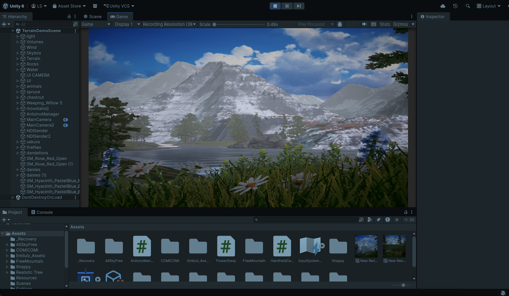
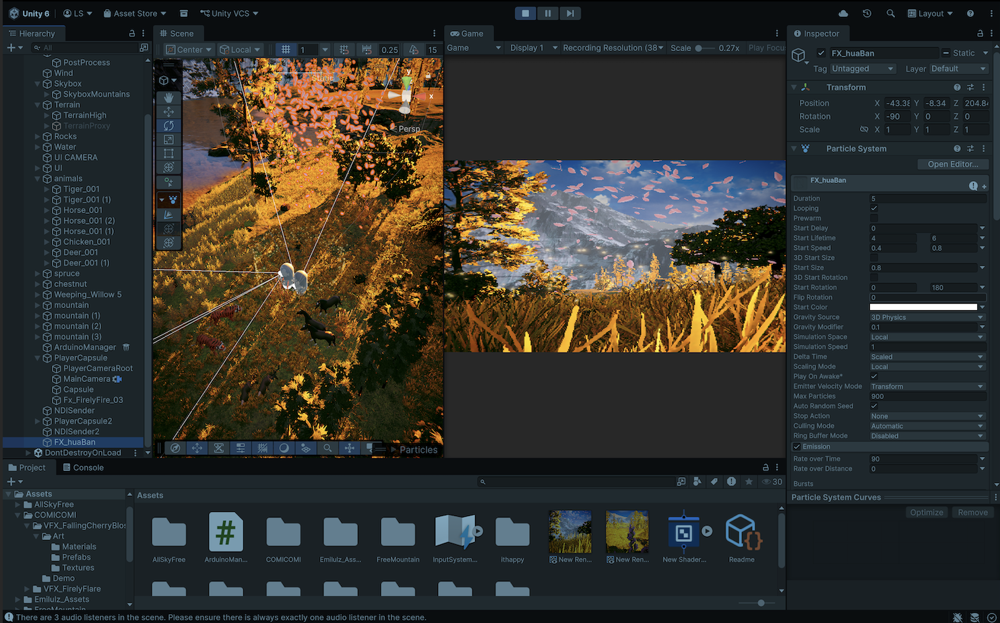
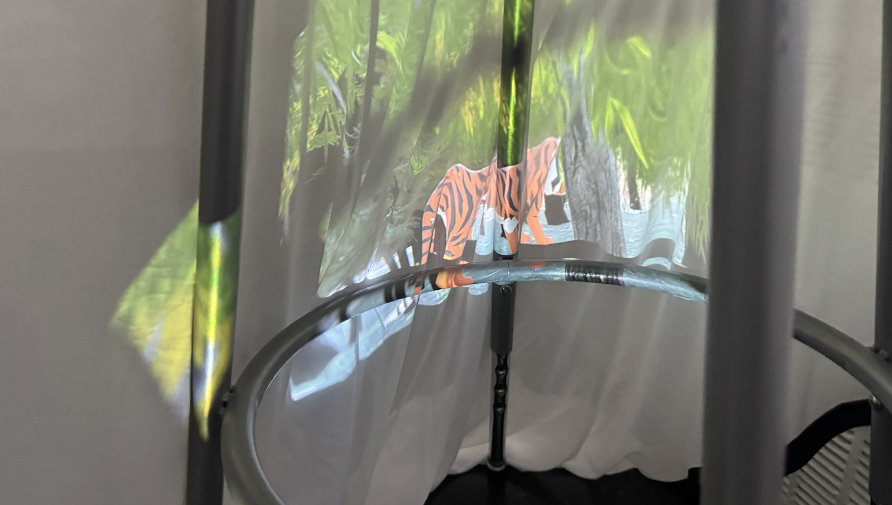
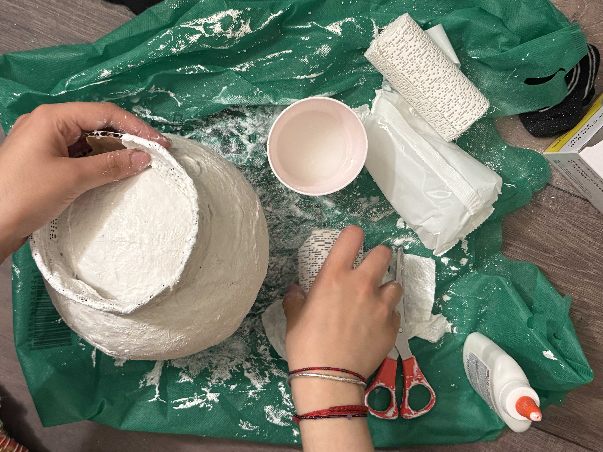
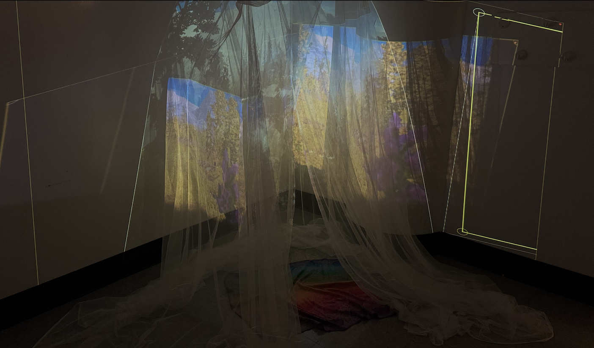
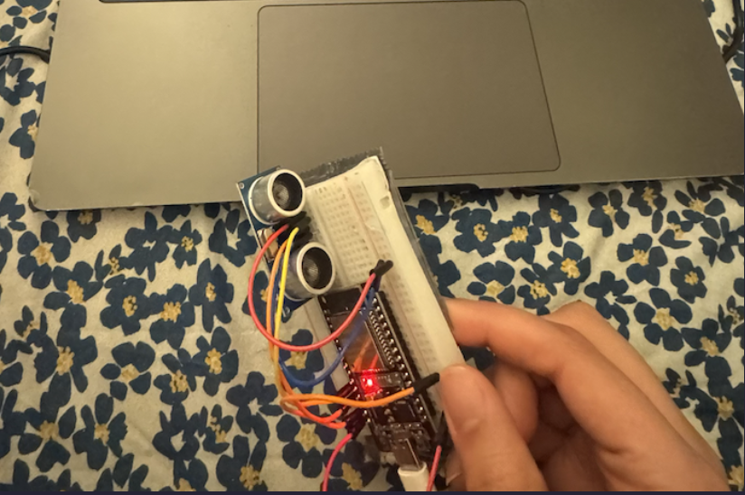

Electronic Art
Apricity
This installation is about the choice to be in a relationship with nature; and what it means to make that choice with intention. The world we live in has conditioned us to see nature as a resource, a backdrop, or a problem to solve. But nature exists before us and will exist after us. What is at stake is not nature's survival but our relationship with it–and whether we choose to tend that relationship or abandon it.
A participant enters a living forest canopy, finds a shrine, and chooses to make an offering. The environment responds; the world recognizes care when it receives it, promoting this attentiveness.


The digital environment is created in Unity, projection mapped using MadMapper, on to a mesh canopy hung from the ceiling. Within the canopy, there are desi textiles laid across the floor, creating an inviting place for a participant to sit. There are organic items, such as marbles, pebbles, seeds, in a bowl outside; a visiter is directed to pick one, enter the canopy, rest within the natural dreamscape, and make an offering to the nature, through the offering bowl. The bowl, made with plaster rolls, hides an ultrasonic sensor, set up with an ESP32 sending signals back to Unity; on detection of an offering, the environment lights up, glowing with fireflies, sunshine, flower petals- similar to the real ones strewn across the the floor. The intention is for a user to truly experience a connection to nature and to understand that their actions have consequences; in a broader context, to spur the realisation that caring for nature is important, in a time where people have forgotten this.
User testing.


Process






Exhibition Presentation & Poster